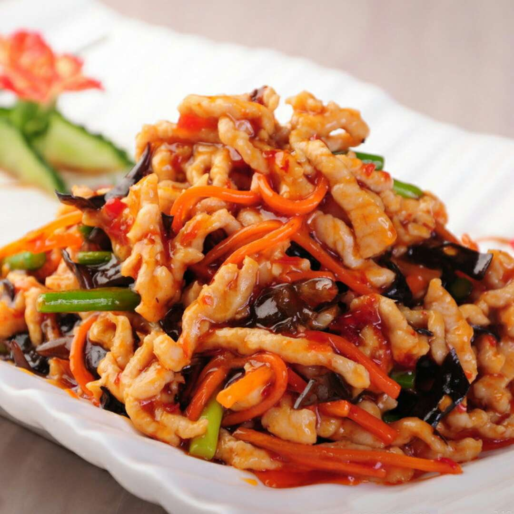

Recipe Detail
Recipe Detail
YuXiang chicken

Required ingredients
List of ingredients
- 1/2 lb Pork tenderloin, cut into thin slivers
- 1 Carrot, julienned
- 1 Bell pepper, julienned
- 2 cloves Garlic, minced
- 1 tbsp Ginger, minced
- 2 Green onions, chopped
- 2 tbsp Light soy sauce
- 1 tbsp Black vinegar
- 1 tsp Sugar
- 1 tbsp Chinese cooking wine (Shaoxing wine)
Other
-
- Difficulty level: medium
- Required time: 20min
Steps
- Marinate the pork slivers with 1 tbsp light soy sauce, Shaoxing wine, and cornstarch for about 15 minutes.
- In a wok or skillet, heat the vegetable oil over medium heat. Stir-fry the ginger and garlic until fragrant.
- Add the chili bean paste and stir-fry for another minute.
- Add the marinated pork and stir-fry until it's almost cooked through.
- Add the julienned carrot and bell pepper, continuing to stir-fry for 2-3 minutes.
- In a separate bowl, mix the remaining light soy sauce, black vinegar, and sugar. Pour this sauce over the pork and vegetables, stirring to coat.
- Cook for another 2-3 minutes until the pork is fully cooked and the vegetables are tender but still crisp.
- Garnish with chopped green onions and serve hot with steamed rice.